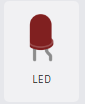
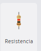
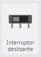
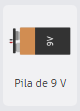
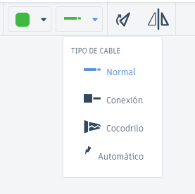

📚 Evaluación
Desarrolla el siguiente circuito en la herramienta de Tinkercad
Circuito en Serie y en Paralelo en Tinkercad
Objetivo:
Construir un circuito que muestre la diferencia entre conexiones en serie y en paralelo utilizando múltiples LED.
Componentes Necesarios:
| 1. 2 LEDs: Diodos emisores de luz (puedes usar diferentes colores). |  |
| 2. 2 Resistores: 220 ohmios (uno para cada LED). |  |
| 3. 1 Interruptor: Para controlar el flujo de corriente. |  |
| 4. 1 Batería: 9V. |  |
| 5. Cables: Para realizar las conexiones. |  |
Pasos para construir el circuito en serie:
1. Ve a Tinkercad (https://www.tinkercad.com) y crea un nuevo proyecto.
2. Agregar Componentes:
Busca y arrastra los siguientes componentes al área de trabajo:
Dos LEDs.
Dos Resistores (220 ohmios).
Un Interruptor.
Una Batería de 9V.
3. Construir el circuito en Serie:
Conecta el terminal positivo de la batería al terminal positivo del primer LED.
Conecta el terminal negativo del primer LED al terminal positivo del segundo LED.
Conecta el terminal negativo del segundo LED al resistor.
Conecta el otro terminal del resistor al terminal negativo de la batería.
Agrega el interruptor en cualquier lugar entre la batería y el primer LED.
4. Simular el circuito en Serie:
Haz clic en "Iniciar Simulación".
Pasos para construir el circuito en paralelo:
1. Construir el circuito en paralelo:
Mantén la misma configuración de la batería.
Conecta el terminal positivo de la batería a los terminales positivos de ambos LEDs.
Conecta los terminales negativos de ambos LEDs a sus respectivos resistores.
Conecta el otro terminal de cada resistor al terminal negativo de la batería.
Agrega el interruptor en cualquier lugar entre la batería y los LEDs.
2. Simular el circuito en paralelo:
Haz clic en "Iniciar Simulación".
Observa cómo ambos LEDs se encienden independientemente al activar el interruptor.